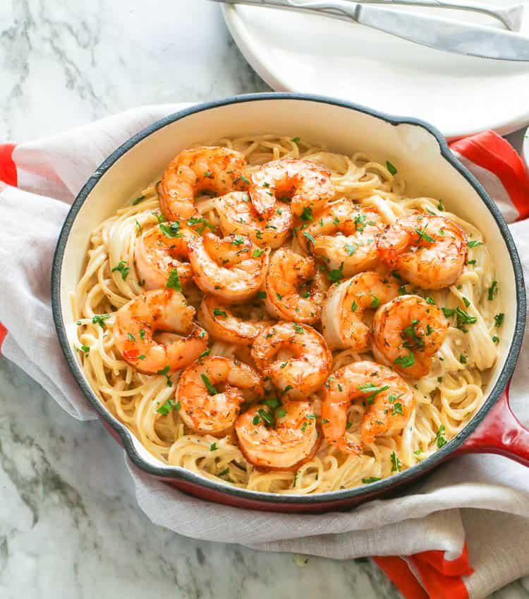

Homepage
Shrimp Alfredo

Description
Shrimp Alfredo is a perfect meal for those who love seafood and pasta. The creamy
and velvety texture of the Alfredo sauce is what makes it a luxurious meal.
Ingredients
- 1 pound Shrimp
- 3 tablesppon butter
- 1 teaspoon Cajun seasoning
- 2 teaspoons minced garlic
- Fresh thyme
- 1 teaspoon Italian seasoning
- 1/2 cup whole milk
- 1 1/2 cups Heavy whipping cream
- 2-3 oz cream cheese
- 1-11/2 freshly grated Parmesan cheese
- 8 oz Fettucine
- Salt and pepper
Steps
- Heat a skillet with 2 teaspoons of oil, then add shrimp and let it rest for 30 seconds
then flip.
- Add Cajun seasoning, salt, and pepper to taste.
-
Cook for 4-5 minutes, making sure to flip to cook each side until fully cooked. Set aside.
- Heat skillet on medium heat , then add butter to the pan, followed by garlic, thyme and
Italian seasoning. Saute for about 1-2 minutes, or until garlic is soft and fragrant.
- Lower heat to medium-low. Whisk in cream and milk, then add cream cheese while continuing
to whisk until smooth. Reduce heat to simmer, then season with salt and pepper to taste.
-
Continue to simmer for about 3-4 minutes until the sauce starts to thicken. Turn off the heat
and toss with pasta and shrimp to serve.